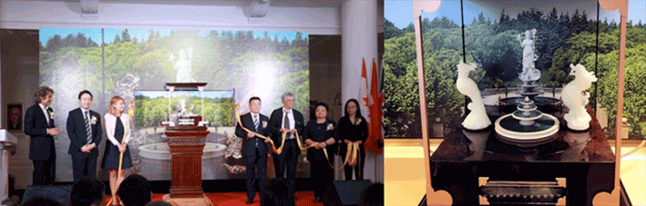
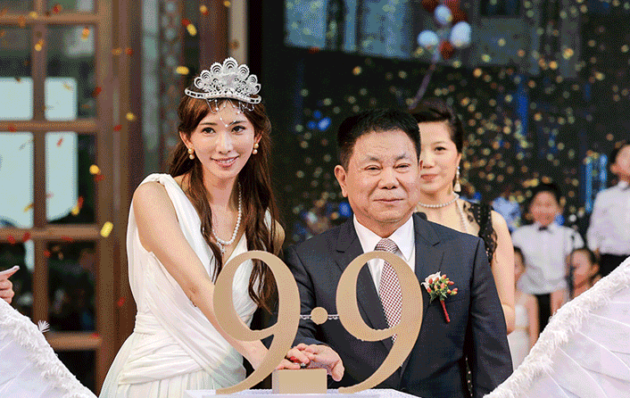

-
大爱人生
在御珑宫廷，有一处令人流连驻足的“世界名人廊”。 这里展示了99位世界名人的油画肖像，他们的大爱故事名扬四海，世代流传。
浪漫传奇
御珑宫廷对面，是一座辽精致人的“香梅和平御园”。 园内的小白楼，因设于这里的“陈纳德陈香梅人文展示馆”而分外令人瞩目。他们的爱情故事，谱写了浪漫而又伟大的真爱传奇。


久久真爱
“香梅和平御园”建成那年的9月9日，两个9岁的小女孩，站在御园正中央的“真爱许愿池”前，面对15米高的“女神艾琳娜”雕像，双手合十，心中默念：“要和好，不要争吵……”，并互赠了心爱的礼物。


艾琳娜9·9国际真爱节
99位世界名人的大爱人生、陈纳德与陈香梅的真爱故事、两个9岁小女孩的纯真心愿、人们内心深处的真爱期盼，缘起了“艾琳娜9·9国际真爱节” —— 每年的9月9日，是每个人表达爱、传递爱、歌颂爱的共同节日。
-
“真爱手心”亮相美国纽约时代广场
纽约时间2018年9月9日，真爱大使艾琳娜做“真爱手心”，亮相纽约时代广场
“真爱女神”艾琳娜，第一次被高科技手段赋予“生命”，在时代广场的巨型屏幕上，做出“真爱手心”，来自世界各地的游客停下脚步，举目欣赏。这是“艾琳娜人文智能可视化”在世界舞台的首次呈现，高迪安向全世界展现了高端前沿科技与真爱人文的完美结合。
里约奥运会开幕不久，真爱手心惊艳亮相在纽约时代广场。国内外不同种族之间，流传着这个特别的手势。它用双手相抵环扣，捧出一颗“真爱之心”，表达着人类共同的爱与愿望。
国际友人们热情地表达了他们对真爱节的祝福：
9•9真爱，真爱久久


这是一个表达真爱的“手心”
超越语言、超越国界、超越肤色
爱情、友情、亲情、恩情……
家庭之爱、自然之爱、世界之爱……
所有关于爱的心意、爱的表达
都可以形塑为这个无声的动作
如果心有爱，如果呼唤爱
一个手心，胜过千言万语

-
艾琳娜9·9国际真爱节
高迪安集团发起了全球第一个以“真爱”为主题的世界性节日——艾琳娜9·9国际真爱节。倡导家庭和睦之互爱、社会和谐之博爱、世界和平之大爱。
2018年9月9日
联合国总部首次举行“艾琳娜9·9国际真爱节”，三大人文艺术瑰宝首次向全球集中展示
(高迪安集团董事长顾文元先生致辞)
(联合国教科文组织协会世界联合会主席巴纳格尔现场演讲)
(美国哈佛大学荣誉教授诺女士和塞尔曼先生现场演讲)

(联合国赴华项目负责人、美国哥伦比亚大学人类学博士何勇先生现场演讲)
(加拿大卡尔加里大学副校长卢万普拉教授和卡尔加里大学教授、中国青少年心理健康研究项目主任赵旭女士现场演讲)
(联合国现场嘉宾齐做真爱手心)
(联合国全程直播视频欣赏)
大山的孩子唱真爱，飞向联合国
高迪安集团与上海宋庆龄儿童基金会共迎“艾琳娜9•9国际真爱节”
(大山孩子共庆真爱节)
稚嫩而纯净的童声回荡在盛夏的香梅和平御园里，来自不同民族的孩子手拉着手，用最动听的声音和充满爱意的童心，演绎著名音乐人高晓松亲自制作的9•9真爱主题曲《久久真爱》。
当孩子们用各自民族的语言喊出“9•9真爱，真爱久久”，用小手不太熟练地比划9•9真爱手心，用稚嫩的笔触写下爱的文字，用纯净动听的童声唱响真爱，由此拉开了即将在美国纽约联合国总部举办的2018年艾琳娜9•9国际真爱节序幕。
2017年9月9日
2017年9月9日,开展国际教育研讨会，各国嘉宾同台热议“真爱人文教育”共庆9·9国际真爱节。

阿里娱乐战略委员会主席、著名音乐人高晓松先生，为9·9真爱亲自操作制作主题曲《久久真爱》，并在2017年9·9国际真爱节全球首发。
瑞士国宝级品牌Reuge御爵独家定制款“金色音乐盒”。
9·9真爱定制版音乐盒，经过长达八个月的纯手工制作，涉及34中不同的专业技术。海马龙、海马凤在真爱之歌的旋律中，如精灵般围绕着真爱许愿池翩翩起舞；圣洁高雅的艾琳娜女神在蓝天之下，用和平与真爱庇佑苍穹。真爱之歌的旋律，激发人们感受爱、体会爱、传递爱，让更多人微笑、握手、拥抱。
2016年9月9日，“艾琳娜9·9国际真爱节”在真爱之家御珑宫廷隆重举行。正式对外公布全球首个表达真爱的人文符号——真爱手心。

2016年7月、12月，世界著名的杂交水稻之父袁隆平先生先后两次为9·9国际真爱节题名、题词。


2015年9月，联合国教科文组织协会世界联合会主席Bhatnagar先生，盛赞9·9国际真爱节为“诺贝尔式的努力与贡献”。

2015年9月9日，国际巨星林志玲作为真爱大使，亲临第一届9·9国际真爱节，共庆真爱盛典。
 -
联合国总部首映中国影片《真爱》
2018年9月9日，以真爱为主题的影片《真爱》在“艾琳娜9·9国际真爱节”庆典上于纽约联合国总部首映，撞击心灵，催人泪下。
真爱微电影
国际巨星林志玲在御珑宫廷的三个梦

妈妈的味道
真爱,是无怨无悔的付出

心中的白马王子
真爱,是值得等待的365天

世界的南极
真爱，是终身追求的信仰
真爱之歌
音乐是一种伟大的语言，跨越国界、穿越时空。她能触及不可见的心灵深处，表达全人类共同的情感。为了更好地诠释和传播“9·9真爱”理念，高迪安集团特邀著名音乐人高晓松先生打造“真爱专辑”。专辑收录了由高晓松亲自担当制作的歌曲《久久真爱》、《真爱一生》。
高晓松曾在“艾琳娜9·9国际真爱节”上如此讲述这首新歌的创作理念以及他心中的真爱人文观：“在这个文化快餐时代，更深入的思考陷入瓶颈，文化和深度的哲学理念越来越少，真爱人文的坚持与实践，难能可贵。《9·9真爱》专辑就是从真爱人文的角度出发，体现大爱、博爱和互爱的精神。音乐是没有国界的，期待这首歌能成为不同民族、不同语言、不同肤色的人们心中最美好的旋律。”
音乐欣赏：
《真爱一生》MV（说明：歌曲《真爱一生》，歌声来自CARO苏艾）